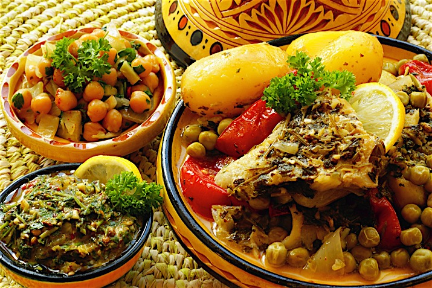
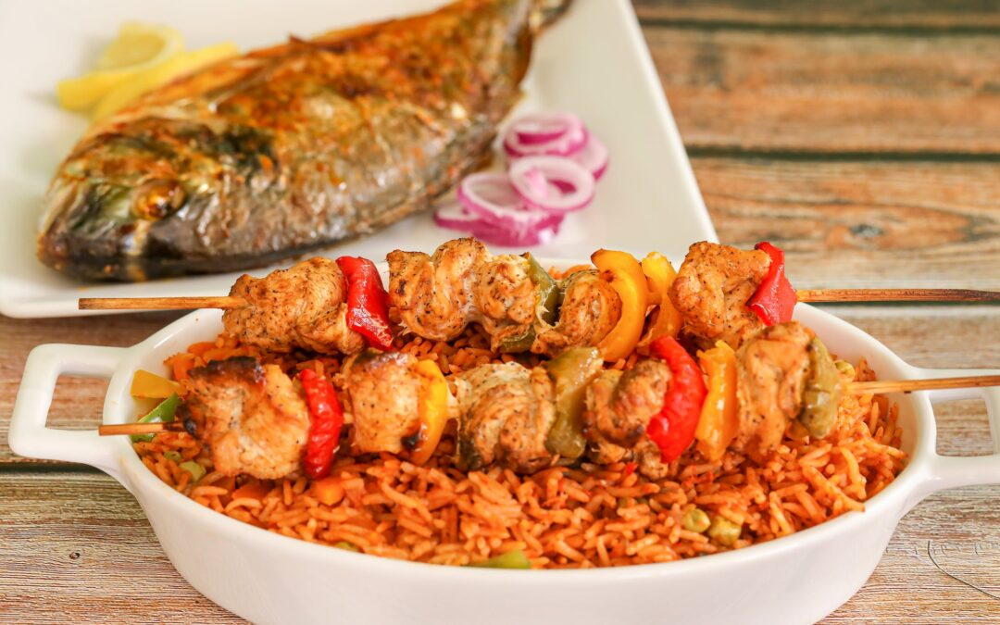

Levantine Cuisine

Key Features: Fresh, herb-forward, mezze-style dining with balanced flavors.
Common Ingredients: Olive oil, lemon, garlic, chickpeas, parsley, flatbreads.
Popular Dishes: Hummus, Falafel, Shawarma, Tabbouleh, Baba Ghanoush.
Regional Styles: Lebanese (herb-rich), Syrian (spice blends), Jordanian/Palestinian (hearty rice & meat dishes).
Turkish Cuisine

Key Features: Blend of Mediterranean, Middle Eastern, and Balkan influences with grilled meats and pastries.
Common Ingredients: Lamb, yogurt, eggplant, peppers, rice, spices.
Popular Dishes: Doner Kebabs, Baklava, Pide, Köfte, Meze platters.
Regional Styles: Anatolian (stews), Aegean (olive oil/seafood), Southeastern (spicy kebabs), Ottoman-style (rich desserts).
North African Cuisine
Key Features: Spice-heavy, aromatic dishes with slow-cooked meats and couscous/tagines.
Common Ingredients: Couscous, lamb, chickpeas, harissa, raisins, preserved lemons.
Popular Dishes: Tagine, Couscous, Harira, Shakshuka, Brik.
Regional Styles: Moroccan (sweet-savory), Tunisian (spicy), Algerian (hearty stews), Egyptian (legume-based).
West African Cuisine
Key Features: Bold, chili-driven stews and starch-based meals with deep, rich flavors.
Common Ingredients: Yams, cassava, plantains, peanuts, tomatoes, chili peppers.
Popular Dishes: Jollof Rice, Fufu, Egusi Soup, Suya, Thieboudienne.
Regional Styles: Nigerian (pepper-rich), Ghanaian (layered stews), Senegalese (seafood influence), Ivorian (root-based dishes).